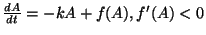
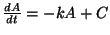
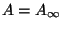
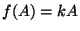
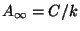
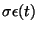
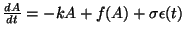
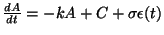
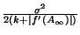
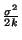

Les boucles de réaction négative augmentent la stabilité, diminuent les fluctuations.
Becksey et Serrano : modèle de transcription de E.coli.
 avec réaction négative.
 sans réaction.
A l'équilibre  est la solution de . On s'arange pour avoir .
Ensuite, introduction d'un bruit blanc  :


En linéarisant on obtient le résultat bien-connu de Ornstein-Uhlenbeck :
la variance de A à l'équilibre est  dans le cas avec réaction et  dans le cas sans réaction.